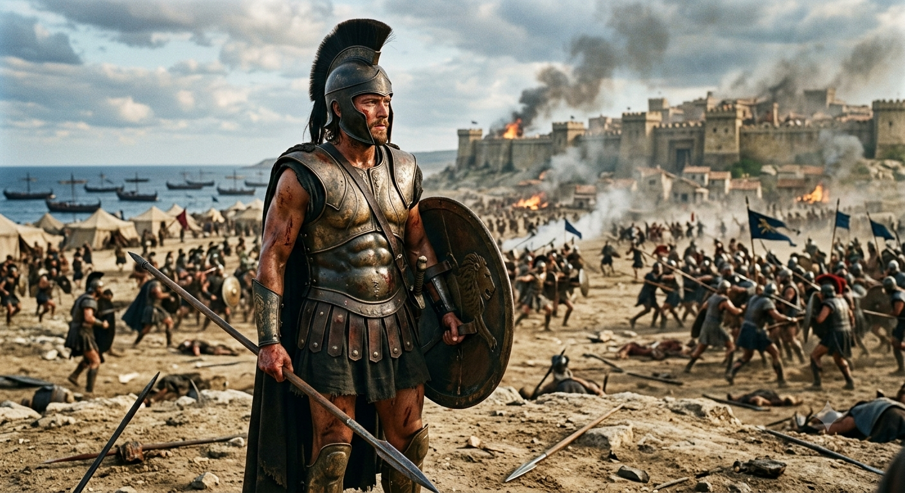

Íliada
por: Kauan Maria
Um dos mais clássicos livros da história, atribuído a Homero, Ilíada é um dos primeiros e mais importantes poemas épicos já escritos. A obra é cheia de batalhas, heróis, deuses e conflitos, sendo uma das principais histórias relacionadas à Guerra de Troia.
A história acompanha principalmente Aquiles, um dos maiores guerreiros gregos, durante os acontecimentos finais da Guerra de Troia. Apesar de ser extremamente habilidoso e quase invencível, Aquiles é conhecido por seu orgulho e por sua personalidade explosiva.
Tudo começa quando Aquiles entra em conflito com Agamêmnon, líder dos gregos, depois que ele toma Briseida, uma mulher que havia sido entregue ao herói como prêmio. Sentindo-se desrespeitado, Aquiles decide abandonar a batalha, deixando os gregos em uma situação cada vez mais difícil.
Enquanto Aquiles permanece afastado, os troianos começam a ganhar vantagem, liderados por Heitor, príncipe de Troia e um dos principais guerreiros da guerra. Diferente de Aquiles, Heitor é apresentado como alguém muito ligado à sua família e à sua cidade, tornando o conflito entre os dois ainda mais interessante.
Tentando ajudar os gregos, Pátroclo, amigo de Aquiles, entra na batalha usando a armadura do herói. Porém, ele acaba sendo morto por Heitor. A morte de seu amigo faz Aquiles abandonar sua raiva contra Agamêmnon e voltar para a guerra em busca de vingança.
Aquiles finalmente enfrenta Heitor e consegue derrotá-lo. Depois disso, porém, ele passa a desrespeitar o corpo do inimigo, mostrando o quanto sua raiva e seu desejo de vingança o dominavam. Mesmo sendo um grande herói, Aquiles também possui falhas que acabam trazendo consequências para ele e para outras pessoas.
Um dos momentos mais marcantes acontece quando Príamo, pai de Heitor e rei de Troia, vai até Aquiles para pedir o corpo de seu filho. Comovido pela situação do rei, Aquiles decide devolver o corpo. Esse momento mostra um lado mais humano do personagem e encerra a história com uma reflexão sobre a dor causada pela guerra.
É um dos livros necessários para quem quer começar a entrar no mundo dos clássicos. Apesar de ser uma obra antiga e poder parecer difícil no início, Ilíada apresenta temas como orgulho, vingança, amizade, honra e guerra que continuam atuais até hoje.